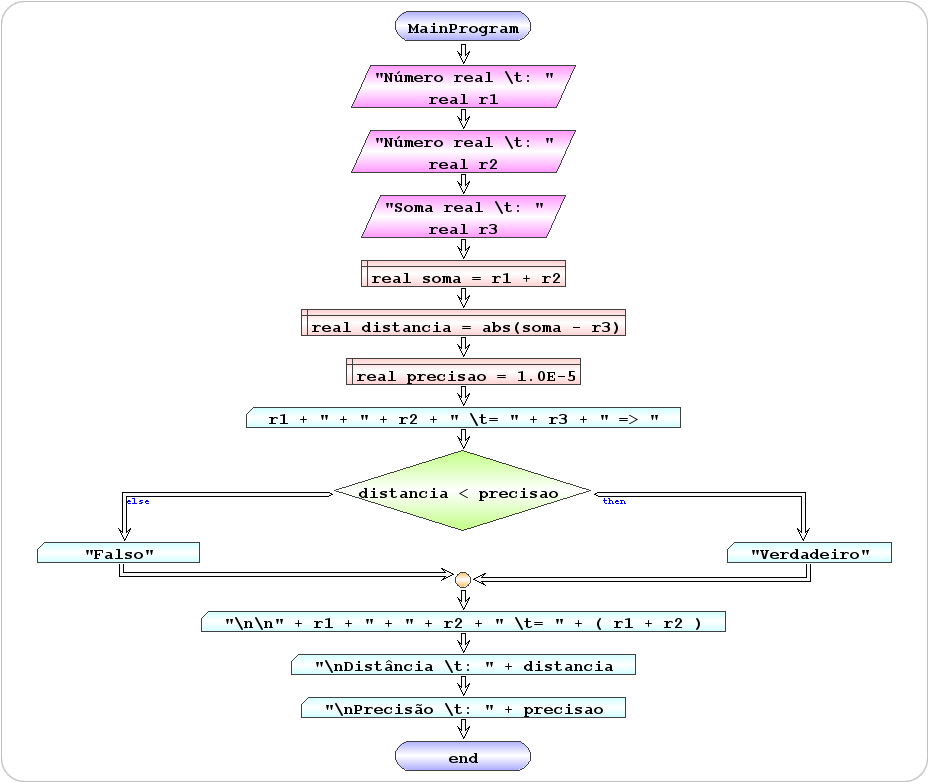

Construa um algoritmo que verifique se a soma de dois números reais é igual a um terceiro com precisão de 5 casas decimais.
r1 + r2 == r3
::::::::::::::::::
A L G O R I T M O
::::::::::::::::::
1 - ler os valores
(r1, r2, r3)
2 - calcular a soma dos dois primeiros (+)
(soma = r1 + r2)
3 - calcular a distancia da soma ao terceiro (abs)
( distancia = abs(soma -r3)
4 - compara a distância com a precisão (1.0E-5)
( distancia < precisão)
5 - Escrever a informação de acordo com a comparção
( "Verdadeiro" ou "Falso" )
 |
 |
begin MainProgram
read real r1 "Número real \t: "
read real r2 "Número real \t: "
read real r3 "Soma real \t: "
define real soma = r1 + r2
define real distancia = abs(soma - r3)
define real precisao = 1.0E-5
write r1 + " + " + r2 + " \t= " + r3 + " => "
if distancia < precisao then
write "Verdadeiro"
else
write "Falso"
end if
write "\n\n" + r1 + " + " + r2 + " \t= " + (r1 + r2)
write "\nDistância \t: " + distancia
write "\nPrecisão \t: " + precisao
end MainProgram
|